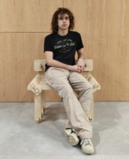
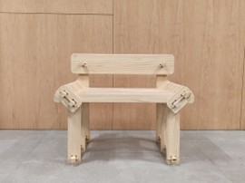

Silla/butaca de madera carente de pegamento o tornillería, que se monta y que aguanta su propio peso junto el de cualquier persona que se siente en ella a través de encajes, haciéndola realmente resistente, además de ser cómoda y tener un diseño llamativo con 6 patas y laminas de madera espaciadas en el asiento.
 